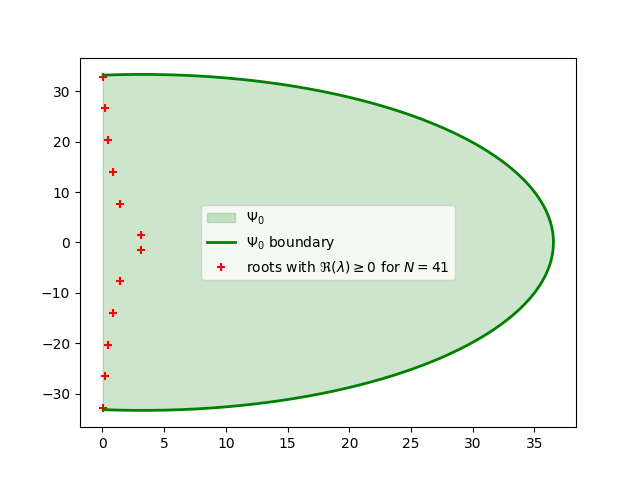
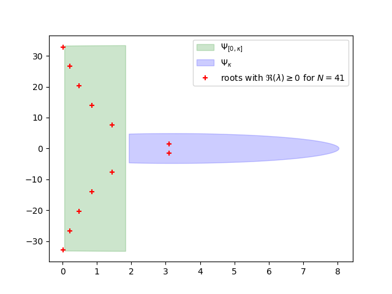
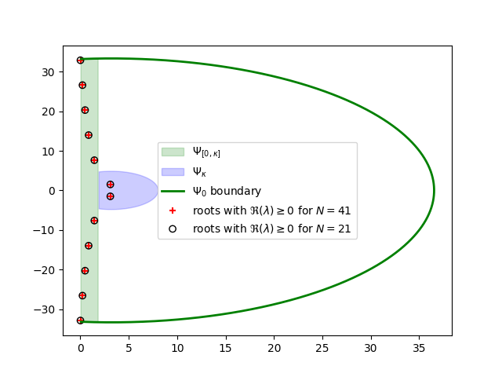
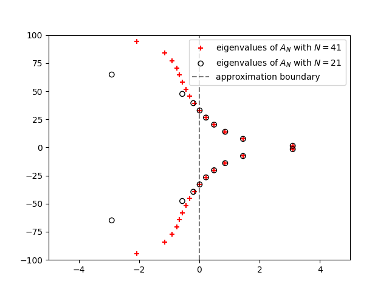

Note
Go to the end to download the full example code.
Tutorial - Discretization Heuristic I#
In this tutorial we will dive into the discretization heuristic, an algorithm proposed in [Wu and Michiels, 2012] designed for automatic selection of the number of discretization points such that the approximation of roots obtained via solving the discretized eigenvalue problem is good enough to be corrected by local method.
The purpose of this tutorial is not to understand mathematics (we refer to [Wu and Michiels, 2012]), but to understand implementation in this package.
We consider Example 1 - time delay system
And we want to find the discretization \(N\), such that all characteristic roots \(\lambda\) with \(\Re(\lambda) \geq 0\) are sufficiently well approximated via \(A_{N}\) - discretized infinitesimal generator.
Note that as this is tutorial, we will go deeper than high level interface and
use internal functions. In the end, the result should be equal to calling
tdcpy.roots(.) without specifying discretization.
import matplotlib.pyplot as plt
import numpy as np
import scipy.linalg as linalg
from tdcpy.stability.discretization_heuristic import incommensurate_gk, cubic_spline_a, cubic_spline_b
from tdcpy.common.discretization import discretize_ddae
# define time delay system in usual matrix form
E = np.eye(1)
A0 = np.array([[3.2]])
A1 = np.array([[-33.34]])
A = np.stack([A0, A1], axis=2)
hA = np.array([0, 1.])
Note that stacking matrices A0 and A1 along 3rd dimension
into array A is done automatically when using high level interface.
Preprocessing#
It is assumed that, that \(\tau_{max} = 1\) and that we are interested in characterestic roots \(\Re(\lambda) \geq 0\). Our problem is already defined in the correct form, however if it would not, we can always normalize by the maximal delay and shift by some real value, i.e. perform \(s \leftarrow \frac{s}{\tau_{max}} + r\) and solve the problem in the same way. The only difference is we need to scale and shift the resulting characteristic roots back. %%
First, we estimate region \(\Psi_{0}\) and its boundary. Next, we will use unnecesserily large discretization \(N_{\Psi_0}\) obtained from this region for comparison and solve discretized eigenvalue problem to obtain characteristic roots %%
n_grid = 1000 # see incommensurate_gk(.)
gk = incommensurate_gk(E, K[:,:,0], K[:,:,1:], hK, grid_points=n_grid)
gk = gk[np.isfinite(gk)] # get rid of inf and NaN
points_Psi0 = gk[(np.real(gk) >= 0)]
# see Equations (34) and (35)
theta_points = np.abs(np.angle(points_Psi0))
pp_a = cubic_spline_a(theta_points)
pp_b = cubic_spline_b(theta_points)
r_points = np.abs(points_Psi0)
N_Psi0 = int( np.max( (r_points - pp_b) / pp_a ) + 1 )
# use this discretization to solve general eigenvalue problem
E_evp, A_evp = discretize_ddae(E, K, hK, discretization=N_Psi0, s0=0)
raw_roots_psi0 = linalg.eig(A_evp, E_evp, left=False, right=False)
roots_psi0 = raw_roots_psi0[np.real(raw_roots_psi0) >= 0]
# \Psi_0
Psi0 = np.r_[points_Psi0, np.conjugate(points_Psi0[::-1])]
Psi0 = Psi0[np.real(Psi0) >= 0]
plt.figure()
plt.fill(np.real(Psi0), np.imag(Psi0), color="green", alpha=0.2,
label=r'$\Psi_0$')
plt.plot(np.real(Psi0), np.imag(Psi0), color="green", linewidth=2,
label=r'$\Psi_0$ boundary')
plt.scatter(np.real(roots_psi0), np.imag(roots_psi0), marker="+", color="red",
label=fr"roots with $\Re(\lambda) \geq 0$ for $N={N_Psi0}$")
plt.legend()
plt.show()

As we are going to see, this discretization, is very conservative and we can do substantialy better if we follow the 2 step process from article. We will use \(\Psi_0\) from above for the interval \(\Re(s) \in [0, \kappa=1.93]\) to obtain \(\Psi_{[0,\kappa]}\) and then solve \(\Psi_{\kappa}\) in a similar fashion as \(\Psi_0\). %%
kappa = 1.93 # from the article
# Equation (29)
points_Psi0kappa = points_Psi0[np.real(points_Psi0) <= kappa]
Psi0kappa = np.r_[points_Psi0kappa, np.conjugate(points_Psi0kappa[::-1])]
# Equation (30)
gk = incommensurate_gk(E, K[:,:,0], K[:,:,1:]*np.exp(-kappa * hK[1:]), hK,
grid_points=n_grid)
gk = gk[np.isfinite(gk)] # get rid of inf and NaN just in case
points_Psikappa = gk[np.real(gk) >= kappa]
Psikappa = np.r_[points_Psikappa, np.conjugate(points_Psikappa[::-1])]
plt.figure()
plt.fill(np.real(Psi0kappa), np.imag(Psi0kappa), color="green", alpha=0.2,
label=r'$\Psi_{[0,\kappa]}$')
plt.fill(np.real(Psikappa), np.imag(Psikappa), color="blue", alpha=0.2,
label=r'$\Psi_{\kappa}$')
plt.scatter(np.real(roots_psi0), np.imag(roots_psi0), marker="+", color="red",
label=fr"roots with $\Re(\lambda) \geq 0$ for $N={N_Psi0}$")
plt.legend()
plt.show()

Compute the discretizations and select the bigger one. %%
# region \Psi_{[0, \kappa]}
theta_points = np.abs(np.angle(points_Psi0kappa))
pp_a = cubic_spline_a(theta_points)
pp_b = cubic_spline_b(theta_points)
r_points = np.abs(points_Psi0kappa)
N_Psi0kappa = int( np.max( (r_points - pp_b) / pp_a ) + 1 )
# region \Psi_{\kappa}
theta_points = np.abs(np.angle(points_Psikappa)) # |angle z|
pp_a = cubic_spline_a(theta_points)
pp_b = cubic_spline_b(theta_points)
r_points = np.abs(points_Psikappa)
N_Psikappa = int( np.max( (r_points - pp_b) / pp_a ) + 1 )
# as a result, take the the maximum
N = max(N_Psi0kappa, N_Psikappa)
# use this discretization to solve general eigenvalue problem
E_evp, A_evp = discretize_ddae(E, K, hK, discretization=N, s0=0)
raw_roots = linalg.eig(A_evp, E_evp, left=False, right=False)
roots = raw_roots[np.real(raw_roots) >= 0]
plt.figure()
plt.fill(np.real(Psi0kappa), np.imag(Psi0kappa), color="green", alpha=0.2,
label=r'$\Psi_{[0,\kappa]}$')
plt.fill(np.real(Psikappa), np.imag(Psikappa), color="blue", alpha=0.2,
label=r'$\Psi_{\kappa}$')
plt.plot(np.real(Psi0), np.imag(Psi0), color="green", linewidth=2,
label=r'$\Psi_0$ boundary')
plt.scatter(np.real(roots_psi0), np.imag(roots_psi0), marker="+", color="red",
label=fr"roots with $\Re(\lambda) \geq 0$ for $N={N_Psi0}$ ")
plt.scatter(np.real(roots), np.imag(roots), marker="o", color="black",
facecolors="none",
label=fr"roots with $\Re(\lambda) \geq 0$ for $N={N}$ ")
plt.legend()
plt.show()

plt.figure()
plt.scatter(np.real(raw_roots_psi0), np.imag(raw_roots_psi0), marker="+",
color="red", label=fr"eigenvalues of $A_N$ with $N={N_Psi0}$ ")
plt.scatter(np.real(raw_roots), np.imag(raw_roots), marker="o", color="black",
facecolors="none", label=fr"eigenvalues of $A_N$ with $N={N}$ ")
plt.axvline(0, linestyle="--", color="black", label="approximation boundary",
alpha=0.5)
plt.ylim(-100, 100)
plt.xlim(-5, 5)
plt.legend()
plt.show()

Total running time of the script: (0 minutes 0.519 seconds)